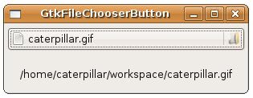
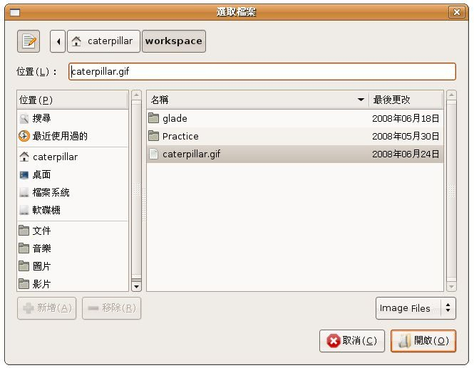

在 視窗程式中開啟檔案或另存檔案的動作，會使用檔案對話方塊來讓使用者方便的選取或決定檔案名稱，GtkFileChooserButton可以提供按下後 出檔案對話方塊的功能，您可以使用gtk_file_chooser_button_new()來建立按鈕，使用時必須指定 GtkFileChooserAction：
- GTK_FILE_CHOOSER_ACTION_OPEN：選擇檔案的對話方塊
- GTK_FILE_CHOOSER_ACTION_SAVE：儲存檔案的對話方塊
- GTK_FILE_CHOOSER_ACTION_SELECT_FOLDER：選擇資料夾的對話方塊
- GTK_FILE_CHOOSER_ACTION_CREATE_FOLDER：建立資料夾的對話方塊
GtkFileChooserButton實作了GtkFileChooser介面，您 可以使用gtk_file_chooser_set_filename()設定對話方塊目前的檔案名稱，使用 gtk_file_chooser_get_filename()取得目前的檔案名稱，使用 gtk_file_chooser_set_current_folder()設定目前的目錄名稱等。
出現的對話方塊可以設定檔名過濾，這需要GtkFileFilter，可使用gtk_file_filter_new()建立，例如：
GtkFileFilter *filter1 = gtk_file_filter_new();
GtkFileFilter *filter2 = gtk_file_filter_new();
gtk_file_filter_set_name(filter1, "Images Files");
gtk_file_filter_set_name(filter2, "All Files");
gtk_file_filter_add_pattern(filter1, "*.png");
gtk_file_filter_add_pattern(filter1, "*.xpm");
gtk_file_filter_add_pattern(filter1, "*.jpg");
gtk_file_filter_add_pattern(filter2, "*");
GtkFileFilter *filter2 = gtk_file_filter_new();
gtk_file_filter_set_name(filter1, "Images Files");
gtk_file_filter_set_name(filter2, "All Files");
gtk_file_filter_add_pattern(filter1, "*.png");
gtk_file_filter_add_pattern(filter1, "*.xpm");
gtk_file_filter_add_pattern(filter1, "*.jpg");
gtk_file_filter_add_pattern(filter2, "*");
下面這個程式是個簡單的範例，使用GtkFileChooserDialog來選擇檔案並顯示名稱在GtkLabel上：
- gtk_file_chooser_button_demo.c
#include <gtk/gtk.h>
void file_changed(GtkFileChooserButton *button, GtkLabel *label) {
gchar *file = gtk_file_chooser_get_filename(GTK_FILE_CHOOSER(button));
gtk_label_set_text(label, file);
}
int main(int argc, char *argv[]) {
GtkWidget *window;
GtkWidget *label;
GtkWidget *button;
GtkFileFilter *filter1, *filter2;
GtkWidget *box;
const gchar *filename = "/home/caterpillar/workspace/caterpillar.gif";
gtk_init(&argc, &argv);
window = gtk_window_new(GTK_WINDOW_TOPLEVEL);
gtk_window_set_title(GTK_WINDOW(window), "GtkFileChooserButton");
button = gtk_file_chooser_button_new(
"選取檔案", GTK_FILE_CHOOSER_ACTION_OPEN);
gtk_file_chooser_set_filename(GTK_FILE_CHOOSER(button), filename);
filter1 = gtk_file_filter_new();
filter2 = gtk_file_filter_new();
gtk_file_filter_set_name(filter1, "Image Files");
gtk_file_filter_set_name(filter2, "All Files");
gtk_file_filter_add_pattern(filter1, "*.png");
gtk_file_filter_add_pattern(filter1, "*.gif");
gtk_file_filter_add_pattern(filter1, "*.jpg");
gtk_file_filter_add_pattern(filter2, "*");
gtk_file_chooser_add_filter(GTK_FILE_CHOOSER(button), filter1);
gtk_file_chooser_add_filter(GTK_FILE_CHOOSER(button), filter2);
label = gtk_label_new(filename);
box = gtk_vbox_new(TRUE, 5);
gtk_box_pack_start(GTK_BOX(box), button, TRUE, TRUE, 5);
gtk_box_pack_start(GTK_BOX(box), label, TRUE, TRUE, 5);
gtk_container_add(GTK_CONTAINER(window), box);
g_signal_connect(GTK_OBJECT(window), "destroy",
G_CALLBACK(gtk_main_quit), NULL);
g_signal_connect(GTK_OBJECT(button), "selection_changed",
G_CALLBACK(file_changed), label);
gtk_widget_show_all(window);
gtk_main();
return 0;
}執行時的外觀如下所示：

選取檔案時的對話方塊外觀如下所示：

按下按鈕所出現的對話方塊實際為GtkFileChooserDialog， GtkFileChooserDialog為GtkFileChooserWidget與GtkDialog的組合， GtkFileChooserWidget可以嵌入其它元件，無論是GtkFileChooserButton、 GtkFileChooserDialog、GtkFileChooserWidget都實作了GtkFileChooser介面，都可以使用GtkFileChooser中的函式進行設定或相關操作。
以下的程式使用GtkFileChooserDialog來實作類似上面的範例：
- gtk_file_chooser_dialog_demo.c
#include <gtk/gtk.h>
void file_changed(GtkButton *button, GtkWidget **widgets) {
GtkWidget *dialog = gtk_file_chooser_dialog_new (
"另存新檔 ...", GTK_WINDOW(widgets[0]),
GTK_FILE_CHOOSER_ACTION_SAVE,
GTK_STOCK_CANCEL, GTK_RESPONSE_CANCEL,
GTK_STOCK_SAVE, GTK_RESPONSE_ACCEPT,
NULL
);
GtkFileFilter *filter1 = gtk_file_filter_new();
GtkFileFilter *filter2 = gtk_file_filter_new();
gtk_file_filter_set_name(filter1, "Image Files");
gtk_file_filter_set_name(filter2, "All Files");
gtk_file_filter_add_pattern(filter1, "*.png");
gtk_file_filter_add_pattern(filter1, "*.gif");
gtk_file_filter_add_pattern(filter1, "*.jpg");
gtk_file_filter_add_pattern(filter2, "*");
gtk_file_chooser_add_filter(GTK_FILE_CHOOSER(dialog), filter1);
gtk_file_chooser_add_filter(GTK_FILE_CHOOSER(dialog), filter2);
if(gtk_dialog_run(GTK_DIALOG(dialog)) == GTK_RESPONSE_ACCEPT) {
gchar *fileName = gtk_file_chooser_get_filename(
GTK_FILE_CHOOSER (dialog));
gtk_label_set_text(GTK_LABEL(widgets[1]), fileName);
g_free(fileName);
}
gtk_widget_destroy(dialog);
}
int main(int argc, char *argv[]) {
GtkWidget *window;
GtkWidget *label;
GtkWidget *button;
GtkWidget *box;
GtkWidget *widgets[2];
const gchar *filename = "/home/caterpillar/workspace/caterpillar.gif";
gtk_init(&argc, &argv);
window = gtk_window_new(GTK_WINDOW_TOPLEVEL);
gtk_window_set_title(GTK_WINDOW(window), "GtkFileChooserDialog");
button = gtk_button_new_with_label("選擇檔案");
label = gtk_label_new(filename);
box = gtk_vbox_new(TRUE, 5);
gtk_box_pack_start(GTK_BOX(box), button, TRUE, TRUE, 5);
gtk_box_pack_start(GTK_BOX(box), label, TRUE, TRUE, 5);
gtk_container_add(GTK_CONTAINER(window), box);
widgets[0] = window;
widgets[1] = label;
g_signal_connect(GTK_OBJECT(window), "destroy",
G_CALLBACK(gtk_main_quit), NULL);
g_signal_connect(GTK_OBJECT(button), "clicked",
G_CALLBACK(file_changed), widgets);
gtk_widget_show_all(window);
gtk_main();
return 0;
}